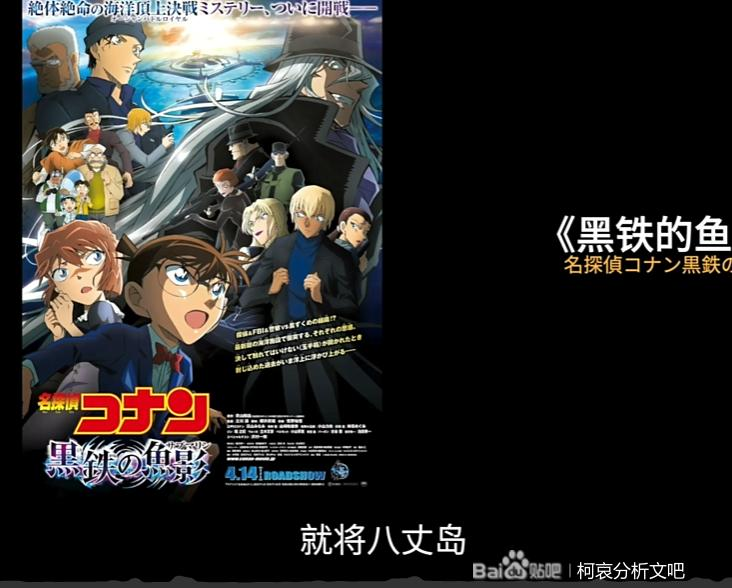

事情是这样的。今天在看X调查的时候，正好有一期关于八丈岛的事件。Will也自然而然提到了柯南的剧场版m26，同时也看到几个弹幕在刷柯哀，本来是会心一笑就过去了，但接下来Will提到的关于八丈岛的传说引起了我的兴趣和新的想法。

接下来就不再截图，我以文字代替截图来转述这个传说：据当地史志《八丈岛志》等记载，孝灵天皇七十二年（公园前219年） 徐福受秦始皇派遣，至东海寻找长生不老仙药，到达纪州熊野。徐福一行人到达熊野后， 派遣童男童女乘船四处寻找仙药。途中船只被海浪冲散，乘坐童男的船漂到了附近的青岛（青ケ岛）。都来每年南风吹来的时候，童男就渡海去八丈岛与童女相会。后续省略。
这个传说我是有听闻的，但没注意是发生在八丈岛。首先童男童女这个身份很对人设，其次长生不老仙药也很对应A药，让我不得不产生“很像”的想法。
值得注意的是，童男每次都是在“南风”到来之时前往八丈岛与童女相会，虽然这个是巧合，但对应“南风知哀意”，还是有一点浪漫。
值得注意的是，童男每次都是在“南风”到来之时前往八丈岛与童女相会，虽然这个是巧合，但对应“南风知哀意”，还是有一点浪漫。
2024-05-09 06:17 | 炫炎龙凤:大G老师是不是在老福特有号，我看过你的文2024-05-09 06:35 | 平者深黑:其实我觉得南原千叠岩这个名字也挺不错2024-05-09 06:37 | 最爱Glamy:就是“我都看哭了”那里
回复 炫炎龙凤 :2024-05-09 06:37 | 最爱Glamy:回复 平者深黑 :这个也确实有点意思2024-05-09 07:31 | 随意♬飘荡:回复 最爱Glamy :原来真的是你啊，我还以为只是同名而已，我也在追你的文呢。2024-05-09 10:38 | 最爱Glamy:回复 随意♬飘荡 :啊哈哈，因为没什么必要特意去提。谢谢支持2024-05-09 15:04 | 随意♬飘荡:回复 最爱Glamy :毕竟实在是想不到老福特写文的大佬也是文吧的老熟人啊，其实我一直都记得你的，因为之前在文吧和你互相讨论过问题吧。2024-05-09 22:37 | 最爱Glamy:回复 随意♬飘荡 :哈哈，我对你也很有印象，在贴吧超活跃


抛砖到此为止，期待玉言金句
柯南里面的传说绝对是和人物对应的，天狗，假面超人剧本
千言万语汇成一句话，牛逼！
好抛，支持
其中一条弹幕就是我发的
好好好好好
Will啊，好长时间都没看了，记得他讲的韩国梨泰院杀人事件印象挺深的。
哇哦
在名侦探柯南VS鲁邦三世里，柯南跟鲁邦坐的飞机原本说就要临时停靠在八丈岛，只不过后来坠毁了。这只是巧合还是会有关系？